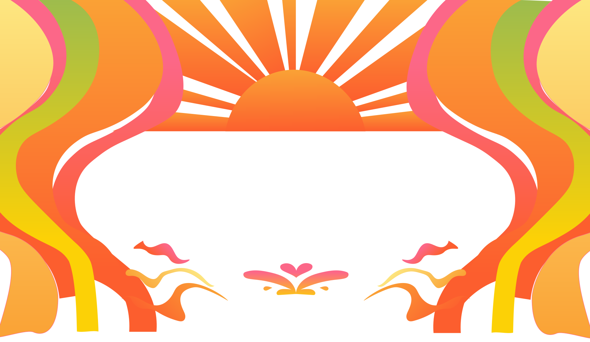
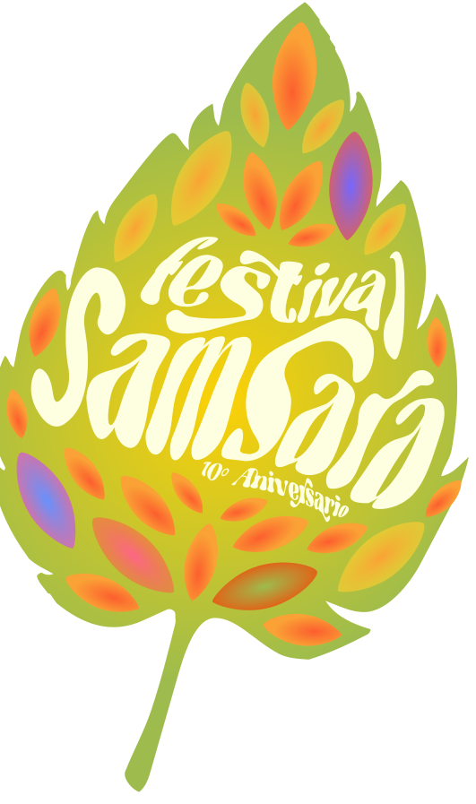
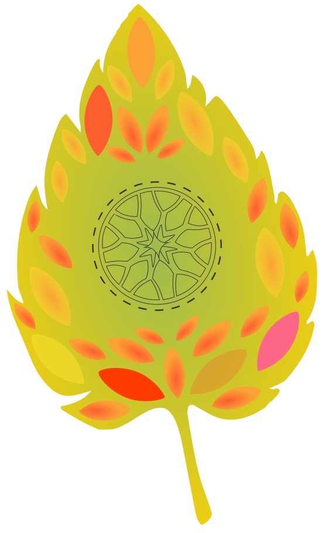
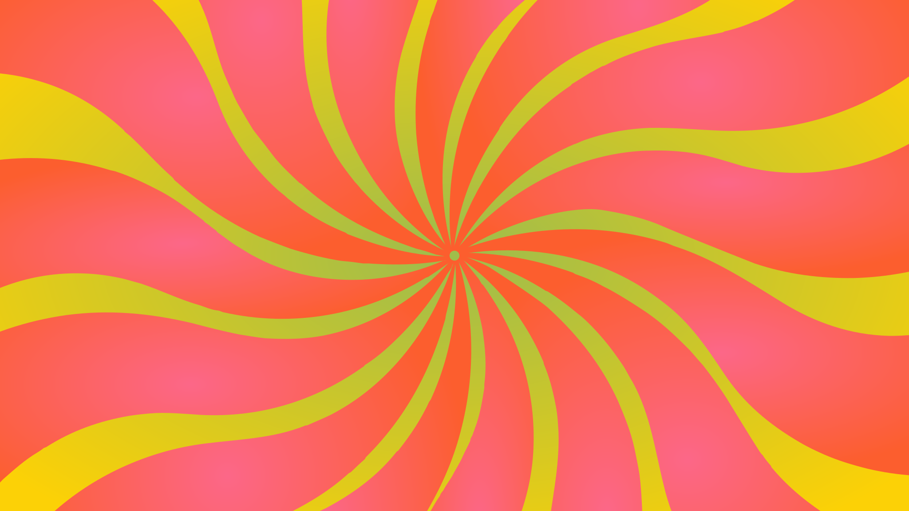

Música en vivo, arte y naturaleza en el corazón de la Patagonia.
Un festival para desconectar de la rutina, bailar y vibrar en una experiencia colectiva inolvidable.

La Hoja Lúmina actúa como amuleto y pase físico: una pieza botánica calada con láminas translúcidas que transforma la luz para guiar a les caminantes en la experiencia caleidoscópica.
¿Cómo la consigo? En Samsara es bienvenido todo aquél que desee sumergirse en una experiencia plasmada de música y paz.
El ritual se consuma al plasmar el sello de acceso. Que la luz atraviese el calado, active los colores y encienda la vibración. La Hoja Lúmina en mano marca el inicio del ritual: el canal está abierto y la transformación en marcha.

